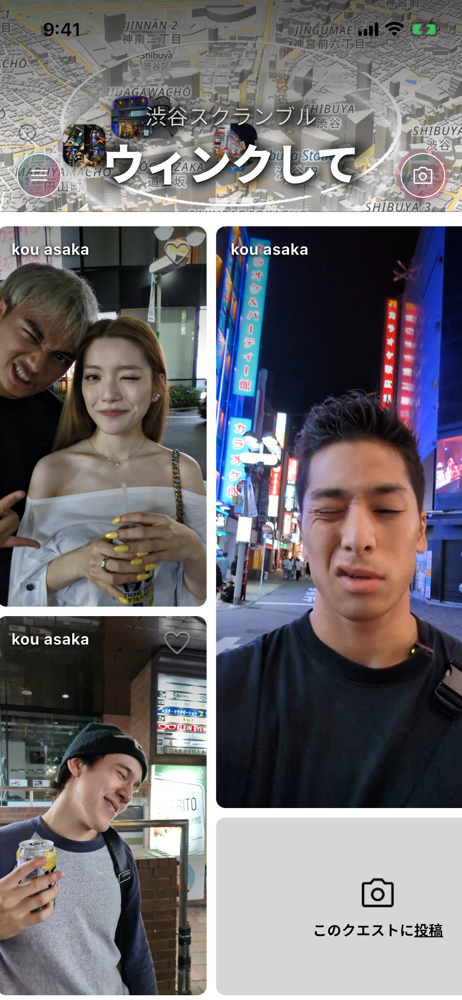

Poster v6 · tall — iPhone 6.9″ · ja — 440×956 · export 1320×2868 @3x
tall-ja-01 · home

地図でつながる街の投稿
この街、何がある？
tall-ja-02 · place

同じ場所の投稿が集まる
気になる店の雰囲気まで。
tall-ja-03 · board
投稿すると答えが見える
同じお題で、街とつながる

tall-ja-04 · full

投稿をタップして全画面へ
写真も動画もその場に浸る